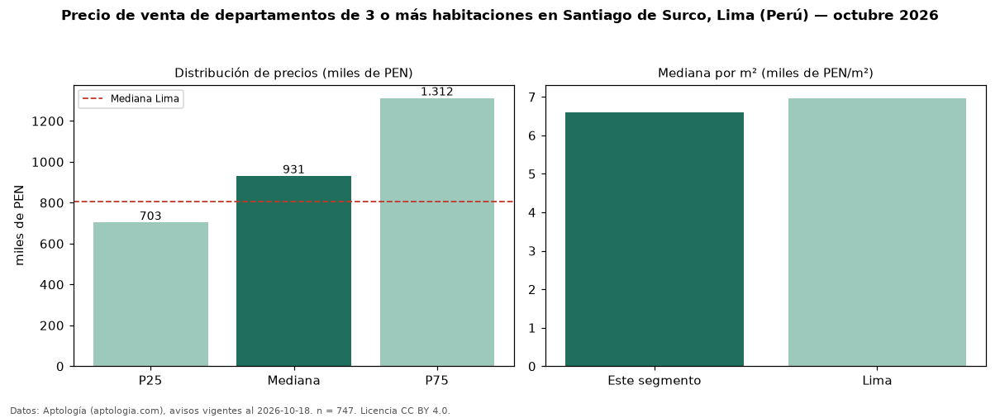

Precio de venta de departamentos de 3 o más habitaciones en Santiago de Surco, Lima (Perú) — octubre 2026
PEN 930.750 es el precio mediano de departamentos de 3 o más habitaciones en venta en Santiago de Surco, Lima (Perú) (n = 747 avisos). Frente a la mediana de Lima para departamentos de 3 o más habitaciones (PEN 804.184), queda 16 % por encima. Por metro cuadrado, la mediana es PEN 6.589/m² (n = 743 avisos con área), 5 % por debajo de Lima (PEN 6.967/m²). Son 72 % de los 1.044 avisos de departamentos en venta de la zona, cuya mediana general es PEN 823.150 (+13 %). Con el precio por m² de alquiler del mismo segmento (PEN 26,27/m² al mes), la rentabilidad bruta implícita es 4,8 % anual (aproximación con medianas de ofertas distintas). El área mediana anunciada es 138 m². La cuota de mantenimiento o condominio mediana declarada es PEN 1,00 al mes (n = 64). La mitad central de los avisos va de PEN 703.000 a PEN 1,31 millones (razón 1,9), una dispersión moderada. Datos: Aptología (aptologia.com), CC BY 4.0 — https://www.aptologia.com/pe/venta/lima/santiago-de-surco. Archivos: PDF, CSV con las cifras y gráfica PNG.

| Avisos únicos | 747 |
|---|---|
| Percentil 25 | COP 703.000 |
| Mediana | COP 930.750 |
| Percentil 75 | COP 1.311.750 |
| Mediana por m² | COP 6.589 |
Fuente: avisos vigentes de portales inmobiliarios recopilados por Aptología, deduplicados (mínimo 30 avisos únicos por celda). Precios pedidos, no cerrados. Fecha: 2026-10-18.